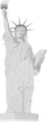

| Réflexions sur la pratique spirituelle |
|
|
 Récemment, j'ai lu un article sur la statue de la Liberté et mon coeur a reçu la lumière de l'espoir. La statue de la Liberté est un symbole de liberté, d'égalité et d'amour universel. Son infinie radiance pénètre l'obscure voile de l'ignorance et du péché pour apporter une nouvelle vie aux gens. Sa signification spirituelle me rappelle Maître et Son nombre croissant de disciples en Amérique. Je n'ai pas de doute sur le fait que les Américains, à l'esprit rationnel et sûrs d'eux par nature seront de plus en plus nombreux à reconnaître la sagesse merveilleuse, l'harmonie paisible et l'esprit inflexible de Maître qui comme la déesse de la Liberté guide les gens perdus dans la mer obscure vers le rivage de la gloire.
Le sculpteur français Frédéric Auguste Bartholdi a passé dix ans à ciseler et creuser la statue de la Liberté dont le style classique fait apparaître le souvenir de la foi primitive de l'humanité. Les sept rayons de sa couronne représente les sept mers et continents du monde. La torche élevée dans sa main droite est un phare guidant dans la nuit les bateaux perdus, tandis que dans sa main gauche elle tient la tablette sur laquelle on peut lire en chiffres romains le 4 juillet 1776. Incruster en dessous de ses pieds des chaînes rompues de la tyrannie, montre très clairement que toutes ces entraves à la liberté seront brisées.
A l'origine, appelée La Liberté illuminant le monde, cette statue était un cadeau de la France à l'Amérique pour commémorer le centenaire de l'indépendance des Etats-Unis et pour symboliser l'amitié éternelle entre les deux nations. Cette belle intention a fait que la statue dès le départ ait apparu divine mais en même proche des gens. Beaucoup de gens l'ont vénérée comme la mère des exilés ou autrement dit la mère de l'espoir pour ceux qui étaient persécutés. La poétesse new yorkaise, Emma Lazarus lui a dédié un sonnet intitulé : "Le nouveau colosse", lequel semble être un portrait exact de Maître :
"LE NOUVEAU COLOSSE"
Non pas comme le célèbre et fier géant grec
Avec des membres conquérants chevauchant de pays en pays ;
Ici sur le bord de la mer lavée, à la porte du coucher du soleil se lèvera
Une femme toute puissante, portant une torche dont la flamme
Mère des Exilés. De sa main-phare
Elle accueille le monde entier ;ses yeux doux commandent
Le pont aérien que les villes jumelles encadrent.
" Gardez, terres anciennes, vos pompeuses histoires ! " crie-t-elle
De ses lèvres closes. " Donnez-moi vos peuples pauvres et fatigués,
Vos multitudes blotties cherchant leur souffle libre,
Les rejetés démoralisés par vos rivages grouillants,
Envoyez-moi ces sans-abri, ballottés par la mer,
J'élève ma lampe auprès de la porte d'or ! "
(Source : Emma Lazarus, les poèmes de Emma Lazarus, vol 1. (1889))
L'esprit magnanime de tolérance exprimé dans ce poème me donne une image claire de l'esprit dans lequel les Etats-Unis ont été bâtis et comment ce nouveau continent est devenu plus tard un paradis attrayant des immigrants du monde entier. De Son amour inconditionnel et divin et Son voeu plein de compassion pour délivrer toutes les âmes souffrantes, Maître est sans aucun doute, le déesse vivante de liberté.
|
|